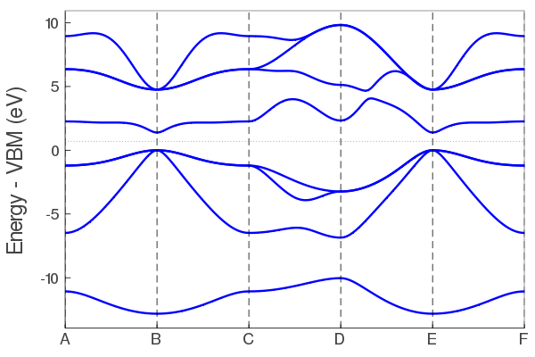
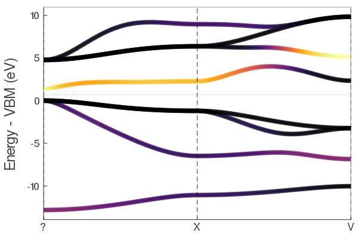
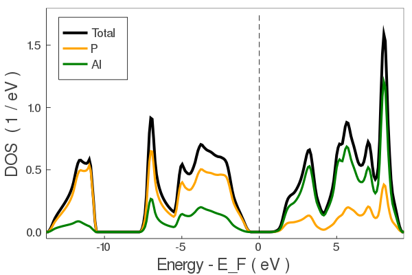

Running tight-binding calculations
How to run tight-binding calculations using the pre-fit tight-binding coefficients. Note, only elemental and binary systems are currently supported.
Running a julia function for the first time will compile the function. Future runs will be much faster.
Create a crystal object
Consists of lattice vectors, atomic positions, and atom types.
using ThreeBodyTB
A = [2.1 2.1 0.0;2.1 0.0 2.1;0.0 2.1 2.1];
pos = [0.0 0.0 0.0];
types = ["Al"];
fcc_al = makecrys(A, pos, types)Units: Å A1= 2.10000 2.10000 0.00000 A2= 2.10000 0.00000 2.10000 A3= 0.00000 2.10000 2.10000 Al 0.00000 0.00000 0.00000
Current default units are Angstrom and eV. You can change the global units to atomic units with set_units(both="atomic") if you prefer.
Alternatively, you can read the positions from a simple POSCAR or Quantum Espresso input file.
rbcl = makecrys("../src/POSCAR_rbcl")Units: Å A1= 3.90963 -0.00000 0.00000 A2= -0.00000 3.90963 0.00000 A3= 0.00000 -0.00000 3.90963 Rb 0.00000 0.00000 0.00000 Cl 0.50000 0.50000 0.50000
Do a self-consistent calculation.
Gets the energy and charge density.
alp = makecrys("../src/POSCAR_alp")
energy, tbc_alp = scf_energy(alp);
println("The energy is $energy eV")Begin scf_energy------------- Load TB parameters from file prepare atoms ["Al", "P"] construct ----- Construct tight-binding model from crystal structure distances CHECK FRONTIER - everything fine 2body 3body onsite ----- 0.254613 seconds (3.00 M allocations: 130.210 MiB, 11.41% gc time) ------ Do SCF Mixing mode: pulay Get initial guess from tbc DQ: [0.0, -0.0] Parameters: smearing = 0.01 conv_thr = 1.0e-5, iters = 75, mix = 0.8, grid = missing START SCF ---------------- SCF CALC 0001 energy -10.42350021 SCF CALC 0002 energy -10.39235446 en_diff: 3.114575E-02 dq_diff: 9.077615E-01 SCF CALC 0003 energy -10.37239696 en_diff: 1.995750E-02 dq_diff: 7.231044E-01 SCF CALC 0004 energy -10.28933097 en_diff: 8.306599E-02 dq_diff: 1.452555E-01 SCF CALC 0005 energy -10.26727897 en_diff: 2.205201E-02 dq_diff: 2.901010E-02 SCF CALC 0006 energy -10.26272388 en_diff: 4.555090E-03 dq_diff: 5.804629E-03 SCF CALC 0007 energy -10.26180215 en_diff: 9.217278E-04 dq_diff: 1.160782E-03 SCF CALC 0008 energy -10.26161767 en_diff: 1.844756E-04 dq_diff: 2.321653E-04 YES convergence in 8 iters, energy -10.261617674454513 eV dq = [-1.163, 1.163] END SCF ------------------ scf_energy success, done The energy is -10.261617674454513 eV
This returns the (non-magnetic) atomization energy, and a tight-binding object with the TB matrix elements and SCF electron density calculated for post-processing.
Plot the band structure.
Using the tight-binding object tbc_alp from above. Note: SCF must be done first.
plot_bandstr(tbc_alp, do_display=false);plot_bandstr align vbm color = blue markersize = 0

Use do_display=true to produce an interactive plot. Here is is false because we are saving a static figure with savefig for the docs.
The default plot_bandstr just picks some random kpoints, but you can add your own kpath. We also project onto the s orbital of Al.
kpath=[0.0 0.0 0.0; 0.5 0.5 0.5; 0.0 0.5 0.5];
knames=["Γ", "X", "V"];
plot_bandstr(tbc_alp, kpath=kpath, names=knames, npts=100, proj_orbs=[:s], proj_types=["Al"], do_display=false);proj_inds [1] plot_bandstr align vbm

You can also plot the DOS.
dos(tbc_alp, do_display=false);grid [14, 14, 14]
Projection type: atomic
PROJ
("P", [5, 6, 7, 8], 4)
("Al", [1, 2, 3, 4], 4)
Project onto orbitals instead with proj_type=:orbs
Calculate force / stress
energy, force, stress, tbc = scf_energy_force_stress(tbc_alp);
println("energy $energy")
println()
println("Forces")
show(stdout, "text/plain", force)
println()
println("Stress")
show(stdout, "text/plain", stress)prepare atoms ["Al", "P"]
Calculate Force, Stress (no scf)
get_energy_force_stress_fft
0.974550 seconds (7.54 M allocations: 695.992 MiB, 19.42% gc time)
done
----
energy -10.26158075647966
Forces
2×3 Array{Float64,2}:
-1.37139e-11 -1.37134e-11 -1.37134e-11
0.0 0.0 0.0
Stress
3×3 Array{Float64,2}:
0.138528 0.0 0.0
0.0 0.138528 0.0
0.0 0.0 0.138528Can also be called directly on a new crystal structure instead of a tb_crys object.
Relax structure
crys_new, tbc_updated, energy, force, stress = relax_structure(alp);
println("Energy new $energy")
println()
println("Force")
show(stdout, "text/plain", force)
println()
println("Stress")
show(stdout, "text/plain", stress)prepare atoms ["Al", "P"]
-----
Construct tight-binding model from crystal structure
distances
CHECK FRONTIER - everything fine
2body
3body
onsite
-----
------
Do SCF
Mixing mode: pulay
Get initial guess from tbc
DQ: [0.0, -0.0]
Parameters:
smearing = 0.01 conv_thr = 1.0e-7, iters = 75, mix = 0.8, grid = missing
START SCF ----------------
SCF CALC 0001 energy -10.42350021
SCF CALC 0002 energy -10.39235446 en_diff: 3.114575E-02 dq_diff: 9.077615E-01
SCF CALC 0003 energy -10.37239696 en_diff: 1.995750E-02 dq_diff: 7.231044E-01
SCF CALC 0004 energy -10.28933097 en_diff: 8.306599E-02 dq_diff: 1.452555E-01
SCF CALC 0005 energy -10.26727897 en_diff: 2.205201E-02 dq_diff: 2.901010E-02
SCF CALC 0006 energy -10.26272388 en_diff: 4.555090E-03 dq_diff: 5.804629E-03
SCF CALC 0007 energy -10.26180215 en_diff: 9.217278E-04 dq_diff: 1.160782E-03
SCF CALC 0008 energy -10.26161767 en_diff: 1.844756E-04 dq_diff: 2.321653E-04
SCF CALC 0009 energy -10.26158076 en_diff: 3.691797E-05 dq_diff: 4.643256E-05
SCF CALC 0010 energy -10.26157337 en_diff: 7.383469E-06 dq_diff: 9.286542E-06
SCF CALC 0011 energy -10.26157190 en_diff: 1.476750E-06 dq_diff: 1.857307E-06
YES convergence in 11 iters, energy -10.261571896260975 eV dq = [-1.163, 1.163]
END SCF ------------------
starting vec
[0.0, 0.0, 0.0, 0.25, 0.25, 0.25, 0.0, 0.0, 0.0, 0.0, 0.0, 0.0]
START SCF ----------------
SCF CALC 0001 energy -10.26157160
SCF CALC 0002 energy -10.26157157 en_diff: 3.244713E-08 dq_diff: 2.203338E-07
YES convergence in 2 iters, energy -10.261571568465204 eV dq = [-1.163, 1.163]
END SCF ------------------
get_energy_force_stress_fft
0.970941 seconds (7.54 M allocations: 695.992 MiB, 17.70% gc time)
FCALL 1 en: -0.7542113251935092 (Ryd) fsum: 9.238863016187277e-13 ssum: 0.0026132419734498555 xxxxxxxxxxxxxxxxxxxxxxxxxxxxxxx
A1= +2.60000 +2.60000 +0.00000 | +0.13853 +0.00000 +0.00000
A2= +2.60000 +0.00000 +2.60000 | +0.00000 +0.13853 +0.00000
A3= +0.00000 +2.60000 +2.60000 | +0.00000 +0.00000 +0.13853
Al +0.00000 +0.00000 +0.00000 | -0.00000 -0.00000 -0.00000
P +0.25000 +0.25000 +0.25000 | +0.00000 +0.00000 +0.00000
START SCF ----------------
SCF CALC 0001 energy -10.53230186
SCF CALC 0002 energy -10.59397818 en_diff: 6.167633E-02 dq_diff: 1.786657E-01
SCF CALC 0003 energy -10.60902067 en_diff: 1.504248E-02 dq_diff: 1.376620E-01
SCF CALC 0004 energy -10.64490124 en_diff: 3.588058E-02 dq_diff: 2.885200E-02
SCF CALC 0005 energy -10.65231655 en_diff: 7.415305E-03 dq_diff: 5.675919E-03
SCF CALC 0006 energy -10.65374199 en_diff: 1.425438E-03 dq_diff: 1.142095E-03
SCF CALC 0007 energy -10.65402949 en_diff: 2.875001E-04 dq_diff: 2.279245E-04
SCF CALC 0008 energy -10.65408675 en_diff: 5.725843E-05 dq_diff: 4.562083E-05
SCF CALC 0009 energy -10.65409821 en_diff: 1.146643E-05 dq_diff: 9.121582E-06
YES convergence in 9 iters, energy -10.6540982126345 eV dq = [-0.917, 0.917]
END SCF ------------------
START SCF ----------------
SCF CALC 0001 energy -9.83070059
SCF CALC 0002 energy -9.92411012 en_diff: 9.340954E-02 dq_diff: 1.720275E-01
SCF CALC 0003 energy -9.94402549 en_diff: 1.991537E-02 dq_diff: 1.285954E-01
SCF CALC 0004 energy -9.98383372 en_diff: 3.980823E-02 dq_diff: 2.932398E-02
SCF CALC 0005 energy -9.99332335 en_diff: 9.489634E-03 dq_diff: 5.345367E-03
SCF CALC 0006 energy -9.99492289 en_diff: 1.599541E-03 dq_diff: 1.128730E-03
SCF CALC 0007 energy -9.99527378 en_diff: 3.508859E-04 dq_diff: 2.176791E-04
SCF CALC 0008 energy -9.99533967 en_diff: 6.589298E-05 dq_diff: 4.452684E-05
SCF CALC 0009 energy -9.99535338 en_diff: 1.370256E-05 dq_diff: 8.776010E-06
YES convergence in 9 iters, energy -9.995353376387687 eV dq = [-0.675, 0.675]
END SCF ------------------
START SCF ----------------
SCF CALC 0001 energy -10.77406905
SCF CALC 0002 energy -10.73232512 en_diff: 4.174393E-02 dq_diff: 1.948526E-01
SCF CALC 0003 energy -10.72003550 en_diff: 1.228962E-02 dq_diff: 1.505432E-01
SCF CALC 0004 energy -10.68614804 en_diff: 3.388747E-02 dq_diff: 3.139253E-02
SCF CALC 0005 energy -10.67841782 en_diff: 7.730220E-03 dq_diff: 6.172947E-03
SCF CALC 0006 energy -10.67689783 en_diff: 1.519990E-03 dq_diff: 1.242022E-03
SCF CALC 0007 energy -10.67658995 en_diff: 3.078786E-04 dq_diff: 2.478460E-04
SCF CALC 0008 energy -10.67652858 en_diff: 6.136682E-05 dq_diff: 4.960995E-05
SCF CALC 0009 energy -10.67651629 en_diff: 1.229188E-05 dq_diff: 9.918972E-06
YES convergence in 9 iters, energy -10.67651628880611 eV dq = [-0.949, 0.949]
END SCF ------------------
get_energy_force_stress_fft
0.743792 seconds (5.79 M allocations: 562.676 MiB, 19.23% gc time)
FCALL 2 en: -0.7847091885395202 (Ryd) fsum: 9.227625653676464e-9 ssum: 0.00019373782723556385 xxxxxxxxxxxxxxxxxxxxxxxxxxxxxxx
A1= +2.80318 +2.80318 +0.00000 | -0.01027 -0.00000 -0.00000
A2= +2.80318 +0.00000 +2.80318 | -0.00000 -0.01027 -0.00000
A3= +0.00000 +2.80318 +2.80318 | -0.00000 -0.00000 -0.01027
Al +0.00000 +0.00000 +0.00000 | -0.00000 -0.00000 -0.00000
P +0.25000 +0.25000 +0.25000 | +0.00000 +0.00000 +0.00000
START SCF ----------------
SCF CALC 0001 energy -10.67307533
SCF CALC 0002 energy -10.67383770 en_diff: 7.623633E-04 dq_diff: 2.737788E-03
SCF CALC 0003 energy -10.67403900 en_diff: 2.013050E-04 dq_diff: 2.113984E-03
SCF CALC 0004 energy -10.67455394 en_diff: 5.149345E-04 dq_diff: 4.404359E-04
SCF CALC 0005 energy -10.67466438 en_diff: 1.104412E-04 dq_diff: 8.681568E-05
SCF CALC 0006 energy -10.67468592 en_diff: 2.154376E-05 dq_diff: 1.744894E-05
YES convergence in 6 iters, energy -10.674685920964 eV dq = [-0.946, 0.946]
END SCF ------------------
MY CG 1 -0.7847091885395202 sg 0.057596380003261956 step_size 0.28173637336574686 good false
START SCF ----------------
SCF CALC 0001 energy -10.67811315
SCF CALC 0002 energy -10.67736106 en_diff: 7.520946E-04 dq_diff: 2.736614E-03
SCF CALC 0003 energy -10.67716173 en_diff: 1.993282E-04 dq_diff: 2.113837E-03
SCF CALC 0004 energy -10.67664988 en_diff: 5.118521E-04 dq_diff: 4.400885E-04
SCF CALC 0005 energy -10.67654006 en_diff: 1.098186E-04 dq_diff: 8.677736E-05
SCF CALC 0006 energy -10.67651862 en_diff: 2.144203E-05 dq_diff: 1.743847E-05
YES convergence in 6 iters, energy -10.67651861914883 eV dq = [-0.949, 0.949]
END SCF ------------------
START SCF ----------------
SCF CALC 0001 energy -10.68626506
SCF CALC 0002 energy -10.68372865 en_diff: 2.536407E-03 dq_diff: 9.529254E-03
SCF CALC 0003 energy -10.68305158 en_diff: 6.770642E-04 dq_diff: 7.369674E-03
SCF CALC 0004 energy -10.68129689 en_diff: 1.754695E-03 dq_diff: 1.530550E-03
SCF CALC 0005 energy -10.68092127 en_diff: 3.756178E-04 dq_diff: 3.021802E-04
SCF CALC 0006 energy -10.68084774 en_diff: 7.352619E-05 dq_diff: 6.069096E-05
SCF CALC 0007 energy -10.68083293 en_diff: 1.481349E-05 dq_diff: 1.212125E-05
YES convergence in 7 iters, energy -10.680832931298793 eV dq = [-0.963, 0.963]
END SCF ------------------
START SCF ----------------
SCF CALC 0001 energy -10.68710938
SCF CALC 0002 energy -10.68462975 en_diff: 2.479633E-03 dq_diff: 9.552137E-03
SCF CALC 0003 energy -10.68396521 en_diff: 6.645448E-04 dq_diff: 7.396232E-03
SCF CALC 0004 energy -10.68223134 en_diff: 1.733862E-03 dq_diff: 1.532599E-03
SCF CALC 0005 energy -10.68186161 en_diff: 3.697310E-04 dq_diff: 3.029366E-04
SCF CALC 0006 energy -10.68178910 en_diff: 7.251438E-05 dq_diff: 6.081301E-05
SCF CALC 0007 energy -10.68177450 en_diff: 1.459746E-05 dq_diff: 1.214807E-05
YES convergence in 7 iters, energy -10.681774501767233 eV dq = [-0.976, 0.976]
END SCF ------------------
MY CG 2 -0.7847091885395202 sg 0.057596380003261956 step_size 1.7789778889684738 good true
START SCF ----------------
SCF CALC 0001 energy -10.68066975
SCF CALC 0002 energy -10.68122792 en_diff: 5.581669E-04 dq_diff: 2.111670E-03
SCF CALC 0003 energy -10.68137662 en_diff: 1.486972E-04 dq_diff: 1.634654E-03
SCF CALC 0004 energy -10.68176252 en_diff: 3.858987E-04 dq_diff: 3.389020E-04
SCF CALC 0005 energy -10.68184461 en_diff: 8.209340E-05 dq_diff: 6.697498E-05
SCF CALC 0006 energy -10.68186069 en_diff: 1.608415E-05 dq_diff: 1.344611E-05
YES convergence in 6 iters, energy -10.681860692898434 eV dq = [-0.973, 0.973]
END SCF ------------------
get_energy_force_stress_fft
0.737663 seconds (5.79 M allocations: 562.687 MiB, 17.89% gc time)
FCALL 3 en: -0.7851019948524665 (Ryd) fsum: 4.1099117001425885e-8 ssum: 1.1066828403014704e-6 xxxxxxxxxxxxxxxxxxxxxxxxxxxxxxx
A1= +2.78152 +2.78152 -0.00000 | +0.00006 -0.00000 -0.00000
A2= +2.78152 -0.00000 +2.78152 | -0.00000 +0.00006 -0.00000
A3= -0.00000 +2.78152 +2.78152 | -0.00000 -0.00000 +0.00006
Al -0.00000 -0.00000 -0.00000 | +0.00000 +0.00000 +0.00000
P +0.25000 +0.25000 +0.25000 | -0.00000 -0.00000 -0.00000
START SCF ----------------
SCF CALC 0001 energy -10.68186499
SCF CALC 0002 energy -10.68186487 en_diff: 1.187139E-07 dq_diff: 4.070397E-07
YES convergence in 2 iters, energy -10.681864867669983 eV dq = [-0.973, 0.973]
END SCF ------------------
START SCF ----------------
SCF CALC 0001 energy -10.68186589
SCF CALC 0002 energy -10.68186535 en_diff: 5.442800E-07 dq_diff: 2.050263E-06
YES convergence in 2 iters, energy -10.681865347130609 eV dq = [-0.973, 0.973]
END SCF ------------------
MY CG 3 -0.7851019948524665 sg 0.0003214363355938291 step_size 1.6297483852115988 good true
START SCF ----------------
SCF CALC 0001 energy -10.68186481
SCF CALC 0002 energy -10.68186477 en_diff: 3.897793E-08 dq_diff: 1.840503E-07
YES convergence in 2 iters, energy -10.68186477227708 eV dq = [-0.973, 0.973]
END SCF ------------------
get_energy_force_stress_fft
0.735593 seconds (5.79 M allocations: 562.692 MiB, 18.66% gc time)
FCALL 4 en: -0.7851022946811578 (Ryd) fsum: 1.8905255210452969e-6 ssum: 1.1439521723531531e-6 xxxxxxxxxxxxxxxxxxxxxxxxxxxxxxx
A1= +2.78151 +2.78151 -0.00000 | +0.00006 +0.00000 +0.00000
A2= +2.78151 -0.00000 +2.78151 | +0.00000 +0.00006 +0.00000
A3= -0.00000 +2.78151 +2.78151 | +0.00000 +0.00000 +0.00006
Al +0.00000 +0.00000 +0.00000 | -0.00002 -0.00002 -0.00002
P +0.25000 +0.25000 +0.25000 | +0.00002 +0.00002 +0.00002
START SCF ----------------
SCF CALC 0001 energy -10.68168353
SCF CALC 0002 energy -10.68176771 en_diff: 8.418104E-05 dq_diff: 3.187989E-04
SCF CALC 0003 energy -10.68179015 en_diff: 2.244058E-05 dq_diff: 2.467733E-04
YES convergence in 3 iters, energy -10.681790150528078 eV dq = [-0.973, 0.973]
END SCF ------------------
MY CG 4 -0.7851022946811578 sg 0.00033286176974212355 step_size 0.5257252855521286 good false
START SCF ----------------
SCF CALC 0001 energy -10.68202945
SCF CALC 0002 energy -10.68195258 en_diff: 7.687006E-05 dq_diff: 2.908261E-04
SCF CALC 0003 energy -10.68193208 en_diff: 2.049985E-05 dq_diff: 2.251105E-04
YES convergence in 3 iters, energy -10.681932084942947 eV dq = [-0.973, 0.973]
END SCF ------------------
START SCF ----------------
SCF CALC 0001 energy -10.68182084
SCF CALC 0002 energy -10.68184140 en_diff: 2.055799E-05 dq_diff: 7.731729E-05
YES convergence in 2 iters, energy -10.681841399698682 eV dq = [-0.973, 0.973]
END SCF ------------------
MY CG 5 -0.7851022946811578 sg 0.00033286176974212355 step_size 0.1695888017910092 good false
START SCF ----------------
SCF CALC 0001 energy -10.68190486
SCF CALC 0002 energy -10.68188613 en_diff: 1.873102E-05 dq_diff: 7.007974E-05
YES convergence in 2 iters, energy -10.681886132511627 eV dq = [-0.973, 0.973]
END SCF ------------------
START SCF ----------------
SCF CALC 0001 energy -10.68186248
SCF CALC 0002 energy -10.68186357 en_diff: 1.094307E-06 dq_diff: 3.628729E-06
YES convergence in 2 iters, energy -10.68186357490408 eV dq = [-0.973, 0.973]
END SCF ------------------
MY CG 6 -0.7851022946811578 sg 0.00033286176974212355 step_size 0.05470606509387394 good false
START SCF ----------------
SCF CALC 0001 energy -10.68188252
SCF CALC 0002 energy -10.68187422 en_diff: 8.305353E-06 dq_diff: 3.175048E-05
YES convergence in 2 iters, energy -10.681874218347529 eV dq = [-0.973, 0.973]
END SCF ------------------
START SCF ----------------
SCF CALC 0001 energy -10.68186599
SCF CALC 0002 energy -10.68186542 en_diff: 5.722193E-07 dq_diff: 3.307408E-06
YES convergence in 2 iters, energy -10.681865417872471 eV dq = [-0.973, 0.973]
END SCF ------------------
START SCF ----------------
SCF CALC 0001 energy -10.68185925
SCF CALC 0002 energy -10.68186184 en_diff: 2.589780E-06 dq_diff: 9.484838E-06
YES convergence in 2 iters, energy -10.681861836494997 eV dq = [-0.973, 0.973]
END SCF ------------------
MY CG 7 -0.7851022946811578 sg 0.00033286176974212355 step_size 0.6527323243281423 good true
START SCF ----------------
SCF CALC 0001 energy -10.68187063
SCF CALC 0002 energy -10.68186789 en_diff: 2.745353E-06 dq_diff: 1.041388E-05
YES convergence in 2 iters, energy -10.681867888997637 eV dq = [-0.973, 0.973]
END SCF ------------------
get_energy_force_stress_fft
0.724192 seconds (5.79 M allocations: 562.689 MiB, 17.19% gc time)
FCALL 5 en: -0.7851025237558102 (Ryd) fsum: 8.304784685428587e-7 ssum: 1.0586783267508836e-6 xxxxxxxxxxxxxxxxxxxxxxxxxxxxxxx
A1= +2.78152 +2.78152 -0.00000 | +0.00006 +0.00000 +0.00000
A2= +2.78152 -0.00000 +2.78152 | +0.00000 +0.00006 +0.00000
A3= -0.00000 +2.78152 +2.78152 | +0.00000 +0.00000 +0.00006
Al +0.00000 +0.00000 +0.00000 | -0.00001 -0.00001 -0.00001
P +0.25000 +0.25000 +0.25000 | +0.00001 +0.00001 +0.00001
START SCF ----------------
SCF CALC 0001 energy -10.68180045
SCF CALC 0002 energy -10.68183052 en_diff: 3.007006E-05 dq_diff: 1.137987E-04
SCF CALC 0003 energy -10.68183854 en_diff: 8.017295E-06 dq_diff: 8.808630E-05
YES convergence in 3 iters, energy -10.68183853557983 eV dq = [-0.973, 0.973]
END SCF ------------------
MY CG 8 -0.7851025237558102 sg 0.00030762176240772864 step_size 0.21055881429940074 good false
START SCF ----------------
SCF CALC 0001 energy -10.68192604
SCF CALC 0002 energy -10.68189744 en_diff: 2.860207E-05 dq_diff: 1.082144E-04
SCF CALC 0003 energy -10.68188981 en_diff: 7.627018E-06 dq_diff: 8.376267E-05
YES convergence in 3 iters, energy -10.68188981044482 eV dq = [-0.973, 0.973]
END SCF ------------------
START SCF ----------------
SCF CALC 0001 energy -10.68184855
SCF CALC 0002 energy -10.68185616 en_diff: 7.609682E-06 dq_diff: 2.862191E-05
YES convergence in 2 iters, energy -10.681856155246809 eV dq = [-0.973, 0.973]
END SCF ------------------
MY CG 9 -0.7851025237558102 sg 0.00030762176240772864 step_size 0.06792219816109701 good false
START SCF ----------------
SCF CALC 0001 energy -10.68187964
SCF CALC 0002 energy -10.68187269 en_diff: 6.946977E-06 dq_diff: 2.599188E-05
YES convergence in 2 iters, energy -10.681872690234076 eV dq = [-0.973, 0.973]
END SCF ------------------
START SCF ----------------
SCF CALC 0001 energy -10.68186392
SCF CALC 0002 energy -10.68186433 en_diff: 4.041623E-07 dq_diff: 1.340252E-06
YES convergence in 2 iters, energy -10.681864327992256 eV dq = [-0.973, 0.973]
END SCF ------------------
MY CG 10 -0.7851025237558102 sg 0.00030762176240772864 step_size 0.021910386503579682 good false
START SCF ----------------
SCF CALC 0001 energy -10.68187135
SCF CALC 0002 energy -10.68186827 en_diff: 3.079217E-06 dq_diff: 1.177175E-05
YES convergence in 2 iters, energy -10.681868270507124 eV dq = [-0.973, 0.973]
END SCF ------------------
START SCF ----------------
SCF CALC 0001 energy -10.68186522
SCF CALC 0002 energy -10.68186501 en_diff: 2.123377E-07 dq_diff: 1.227593E-06
YES convergence in 2 iters, energy -10.68186500743145 eV dq = [-0.973, 0.973]
END SCF ------------------
MY CG 11 -0.7851025237558102 sg 0.00030762176240772864 step_size 0.0070678666140579615 good false
START SCF ----------------
SCF CALC 0001 energy -10.68186718
SCF CALC 0002 energy -10.68186605 en_diff: 1.133424E-06 dq_diff: 4.421697E-06
YES convergence in 2 iters, energy -10.681866047061153 eV dq = [-0.973, 0.973]
END SCF ------------------
START SCF ----------------
SCF CALC 0001 energy -10.68186503
SCF CALC 0002 energy -10.68186490 en_diff: 1.257770E-07 dq_diff: 7.031217E-07
YES convergence in 2 iters, energy -10.68186489987646 eV dq = [-0.973, 0.973]
END SCF ------------------
MY CG 12 -0.7851025237558102 sg 0.00030762176240772864 step_size 0.002279956972276762 good false
START SCF ----------------
SCF CALC 0001 energy -10.68186559
SCF CALC 0002 energy -10.68186520 en_diff: 3.890391E-07 dq_diff: 1.544118E-06
YES convergence in 2 iters, energy -10.68186519647917 eV dq = [-0.973, 0.973]
END SCF ------------------
START SCF ----------------
SCF CALC 0001 energy -10.68186486
SCF CALC 0002 energy -10.68186481 en_diff: 5.014979E-08 dq_diff: 2.945605E-07
YES convergence in 2 iters, energy -10.681864810602809 eV dq = [-0.973, 0.973]
END SCF ------------------
MY CG 13 -0.7851025237558102 sg 0.00030762176240772864 step_size 0.0007354699910570199 good false
START SCF ----------------
SCF CALC 0001 energy -10.68186503
SCF CALC 0002 energy -10.68186490 en_diff: 1.294163E-07 dq_diff: 5.208746E-07
YES convergence in 2 iters, energy -10.68186489980133 eV dq = [-0.973, 0.973]
END SCF ------------------
START SCF ----------------
SCF CALC 0001 energy -10.68186479
SCF CALC 0002 energy -10.68186477 en_diff: 1.778354E-08 dq_diff: 1.101246E-07
YES convergence in 2 iters, energy -10.681864772682749 eV dq = [-0.973, 0.973]
END SCF ------------------
MY CG 14 -0.7851025237558102 sg 0.00030762176240772864 step_size 0.00023724838421194187 good false
START SCF ----------------
SCF CALC 0001 energy -10.68186484
SCF CALC 0002 energy -10.68186480 en_diff: 4.240116E-08 dq_diff: 1.725418E-07
YES convergence in 2 iters, energy -10.681864800377278 eV dq = [-0.973, 0.973]
END SCF ------------------
START SCF ----------------
SCF CALC 0001 energy -10.68186476
SCF CALC 0002 energy -10.68186476 en_diff: 6.006684E-09 dq_diff: 3.892005E-08
YES convergence in 2 iters, energy -10.681864758927109 eV dq = [-0.973, 0.973]
END SCF ------------------
MY CG 15 -0.7851025237558102 sg 0.00030762176240772864 step_size 7.653173684256189e-5 good false
START SCF ----------------
SCF CALC 0001 energy -10.68186478
SCF CALC 0002 energy -10.68186477 en_diff: 1.378934E-08 dq_diff: 5.657766E-08
YES convergence in 2 iters, energy -10.681864767680144 eV dq = [-0.973, 0.973]
END SCF ------------------
START SCF ----------------
SCF CALC 0001 energy -10.68186476
SCF CALC 0002 energy -10.68186475 en_diff: 1.975234E-09 dq_diff: 1.332318E-08
YES convergence in 2 iters, energy -10.681864754240932 eV dq = [-0.973, 0.973]
END SCF ------------------
MY CG 16 -0.7851025237558102 sg 0.00030762176240772864 step_size 2.4687657045987706e-5 good false
START SCF ----------------
SCF CALC 0001 energy -10.68186476
SCF CALC 0002 energy -10.68186476 en_diff: 4.468792E-09 dq_diff: 1.844222E-08
YES convergence in 2 iters, energy -10.681864757028746 eV dq = [-0.973, 0.973]
END SCF ------------------
START SCF ----------------
SCF CALC 0001 energy -10.68186475
SCF CALC 0002 energy -10.68186475 en_diff: 6.469535E-10 dq_diff: 4.472401E-09
YES convergence in 2 iters, energy -10.681864752678383 eV dq = [-0.973, 0.973]
END SCF ------------------
MY CG 17 -0.7851025237558102 sg 0.00030762176240772864 step_size 7.963760337415389e-6 good false
START SCF ----------------
SCF CALC 0001 energy -10.68186476
SCF CALC 0002 energy -10.68186475 en_diff: 1.437424E-09 dq_diff: 5.989894E-09
YES convergence in 2 iters, energy -10.681864753580268 eV dq = [-0.973, 0.973]
END SCF ------------------
START SCF ----------------
SCF CALC 0001 energy -10.68186475
SCF CALC 0002 energy -10.68186475 en_diff: 2.099600E-10 dq_diff: 1.482547E-09
YES convergence in 2 iters, energy -10.681864752172238 eV dq = [-0.973, 0.973]
END SCF ------------------
MY CG 18 -0.7851025237558102 sg 0.00030762176240772864 step_size 2.568954947553351e-6 good false
START SCF ----------------
SCF CALC 0001 energy -10.68186475
SCF CALC 0002 energy -10.68186475 en_diff: 4.665290E-10 dq_diff: 1.940978E-09
YES convergence in 2 iters, energy -10.681864752462582 eV dq = [-0.973, 0.973]
END SCF ------------------
START SCF ----------------
SCF CALC 0001 energy -10.68186475
SCF CALC 0002 energy -10.68186475 en_diff: 6.798318E-11 dq_diff: 4.875033E-10
YES convergence in 2 iters, energy -10.681864752010302 eV dq = [-0.973, 0.973]
END SCF ------------------
MY CG 19 -0.7851025237558102 sg 0.00030762176240772864 step_size 8.286951443720487e-7 good false
START SCF ----------------
SCF CALC 0001 energy -10.68186475
SCF CALC 0002 energy -10.68186475 en_diff: 1.505551E-10 dq_diff: 6.279912E-10
YES convergence in 2 iters, energy -10.68186475210156 eV dq = [-0.973, 0.973]
END SCF ------------------
START SCF ----------------
SCF CALC 0001 energy -10.68186475
SCF CALC 0002 energy -10.68186475 en_diff: 2.195413E-11 dq_diff: 1.594427E-10
YES convergence in 2 iters, energy -10.681864751955594 eV dq = [-0.973, 0.973]
END SCF ------------------
MY CG 20 -0.7851025237558102 sg 0.00030762176240772864 step_size 2.673210143135641e-7 good false
START SCF ----------------
SCF CALC 0001 energy -10.68186475
SCF CALC 0002 energy -10.68186475 en_diff: 4.858337E-11 dq_diff: 2.029664E-10
YES convergence in 2 iters, energy -10.681864751985014 eV dq = [-0.973, 0.973]
END SCF ------------------
START SCF ----------------
SCF CALC 0001 energy -10.68186475
SCF CALC 0002 energy -10.68186475 en_diff: 7.084413E-12 dq_diff: 5.198680E-11
YES convergence in 2 iters, energy -10.681864751937875 eV dq = [-0.973, 0.973]
END SCF ------------------
MY CG 21 -0.7851025237558102 sg 0.00030762176240772864 step_size 8.623258526244002e-8 good false
START SCF ----------------
SCF CALC 0001 energy -10.68186475
SCF CALC 0002 energy -10.68186475 en_diff: 1.567332E-11 dq_diff: 6.553330E-11
YES convergence in 2 iters, energy -10.681864751947417 eV dq = [-0.973, 0.973]
END SCF ------------------
START SCF ----------------
SCF CALC 0001 energy -10.68186475
SCF CALC 0002 energy -10.68186475 en_diff: 2.285441E-12 dq_diff: 1.695305E-11
YES convergence in 2 iters, energy -10.6818647519322 eV dq = [-0.973, 0.973]
END SCF ------------------
MY CG 22 -0.7851025237558102 sg 0.00030762176240772864 step_size 2.7816962987883877e-8 good false
START SCF ----------------
SCF CALC 0001 energy -10.68186475
SCF CALC 0002 energy -10.68186475 en_diff: 5.055764E-12 dq_diff: 2.112577E-11
YES convergence in 2 iters, energy -10.681864751935274 eV dq = [-0.973, 0.973]
END SCF ------------------
START SCF ----------------
SCF CALC 0001 energy -10.68186475
SCF CALC 0002 energy -10.68186475 en_diff: 7.401626E-13 dq_diff: 5.564937E-12
YES convergence in 2 iters, energy -10.681864751930355 eV dq = [-0.973, 0.973]
END SCF ------------------
MY CG 23 -0.7851025237558102 sg 0.00030762176240772864 step_size 8.973213867059315e-9 good false
START SCF ----------------
SCF CALC 0001 energy -10.68186475
SCF CALC 0002 energy -10.68186475 en_diff: 1.638931E-12 dq_diff: 6.785850E-12
YES convergence in 2 iters, energy -10.681864751931355 eV dq = [-0.973, 0.973]
END SCF ------------------
START SCF ----------------
SCF CALC 0001 energy -10.68186475
SCF CALC 0002 energy -10.68186475 en_diff: 2.416857E-13 dq_diff: 1.873918E-12
YES convergence in 2 iters, energy -10.681864751929727 eV dq = [-0.973, 0.973]
END SCF ------------------
MY CG 24 -0.7851025237558102 sg 0.00030762176240772864 step_size 2.8945851184062304e-9 good false
START SCF ----------------
SCF CALC 0001 energy -10.68186475
SCF CALC 0002 energy -10.68186475 en_diff: 5.226454E-13 dq_diff: 2.225664E-12
YES convergence in 2 iters, energy -10.68186475193009 eV dq = [-0.973, 0.973]
END SCF ------------------
MY CG 25 -0.7851025237558102 sg 0.00030762176240772864 step_size 9.337371349697517e-10 good false
MY CG 26 -0.7851025237558102 sg 0.00030762176240772864 step_size 3.0120552740959735e-10 good false
MY CG 27 -0.7851025237558102 sg 0.00030762176240772864 step_size 9.716307335793462e-11 good false
MY CG 28 -0.7851025237558102 sg 0.00030762176240772864 step_size 3.134292688965633e-11 good false
MY CG 29 -0.7851025237558102 sg 0.00030762176240772864 step_size 1.0110621577308494e-11 good false
MY CG 30 -0.7851025237558102 sg 0.00030762176240772864 step_size 3.2614908313898367e-12 good false
MY CG 31 -0.7851025237558102 sg 0.00030762176240772864 step_size 1.0520938165773667e-12 good false
MY CG 32 -0.7851025237558102 sg 0.00030762176240772864 step_size 3.393851021217312e-13 good false
MY CG 33 -0.7851025237558102 sg 0.00030762176240772864 step_size 1.0947906520055845e-13 good false
MY CG 34 -0.7851025237558102 sg 0.00030762176240772864 step_size 3.531582748405111e-14 good false
MY CG 35 -0.7851025237558102 sg 0.00030762176240772864 step_size 1.1392202414210036e-14 good false
MY CG 36 -0.7851025237558102 sg 0.00030762176240772864 step_size 3.674904004583882e-15 good false
MY CG 37 -0.7851025237558102 sg 0.00030762176240772864 step_size 1.1854529047044781e-15 good false
MY CG 38 -0.7851025237558102 sg 0.00030762176240772864 step_size 3.8240416280789616e-16 good false
MY CG 39 -0.7851025237558102 sg 0.00030762176240772864 step_size 1.2335618155093423e-16 good false
MY CG 40 -0.7851025237558102 sg 0.00030762176240772864 step_size 3.9792316629333625e-17 good false
MY CG 41 -0.7851025237558102 sg 0.00030762176240772864 step_size 1.2836231170752782e-17 good false
MY CG 42 -0.7851025237558102 sg 0.00030762176240772864 step_size 4.140719732500897e-18 good false
MY CG 43 -0.7851025237558102 sg 0.00030762176240772864 step_size 1.335716042742225e-18 good false
MY CG 44 -0.7851025237558102 sg 0.00030762176240772864 step_size 4.3087614282007256e-19 good false
MY CG 45 -0.7851025237558102 sg 0.00030762176240772864 step_size 1.3899230413550727e-19 good false
MY CG 46 -0.7851025237558102 sg 0.00030762176240772864 step_size 4.483622714048622e-20 good false
MY CG 47 -0.7851025237558102 sg 0.00030762176240772864 step_size 1.4463299077576198e-20 good false
MY CG 48 -0.7851025237558102 sg 0.00030762176240772864 step_size 4.665580347605225e-21 good false
MY CG 49 -0.7851025237558102 sg 0.00030762176240772864 step_size 1.5050259185823306e-21 good false
MY CG 50 -0.7851025237558102 sg 0.00030762176240772864 step_size 4.854922318007518e-22 good false
conv not achieved
Relax done
Final Energy -10.681867888997637
A1= +2.78152 +2.78152 -0.00000 | +0.00006 +0.00000 +0.00000
A2= +2.78152 -0.00000 +2.78152 | +0.00000 +0.00006 +0.00000
A3= -0.00000 +2.78152 +2.78152 | +0.00000 +0.00000 +0.00006
Al +0.00000 +0.00000 +0.00000 | -0.00001 -0.00001 -0.00001
P +0.25000 +0.25000 +0.25000 | +0.00001 +0.00001 +0.00001
Energy new -145.33426927753447
Force
2×3 Array{Float64,2}:
-8.71711e-6 -8.71711e-6 -8.71711e-6
8.71711e-6 8.71711e-6 8.71711e-6
Stress
3×3 Array{Float64,2}:
5.61198e-5 1.79656e-7 1.79656e-7
1.79656e-7 5.61198e-5 1.79656e-7
1.79656e-7 1.79656e-7 5.61198e-5Energy is lower, stress is near zero, forces are zero by symmetry in Zinc Blende structure.
Force/Stress defaults are eV/Ang and eV/Ang^3.